![contate no whatsApp]()
Atualmente o trafego de informações pela Internet, apesar de sua efetividade e facilidade nas interações
entre diferentes usuários, também possúi uma ausência administrativa, que é deixada à resposabilidade
do próprio usuário. Sim, se trata exatamente das senhas e etapas de segurança,
que o usuário deve implementar, para evitar, que suas redes e aplicações sejam invadidas ou hackeadas,
e seus dados sejam usados maliciosamente.
entre no aplicativo WhatsApp, clique nos três pontinhos, no canto superior direito no menu inicial.
Selecione a opção configurações.
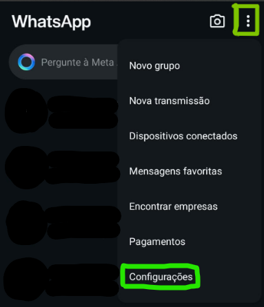No menu de configurações, selecione a opção Conta.
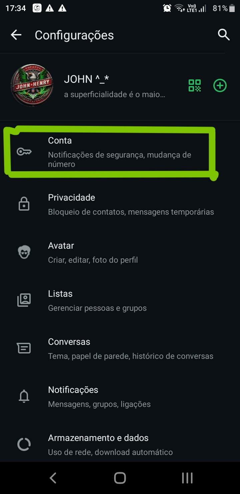No menu da Conta vá até Confirmação em duas etapas.
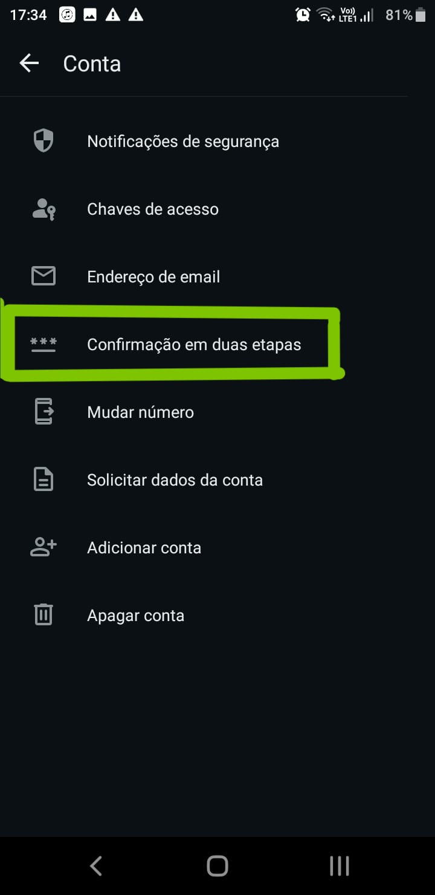Aperte o botão verde ativar, na parte central inferior da tela.
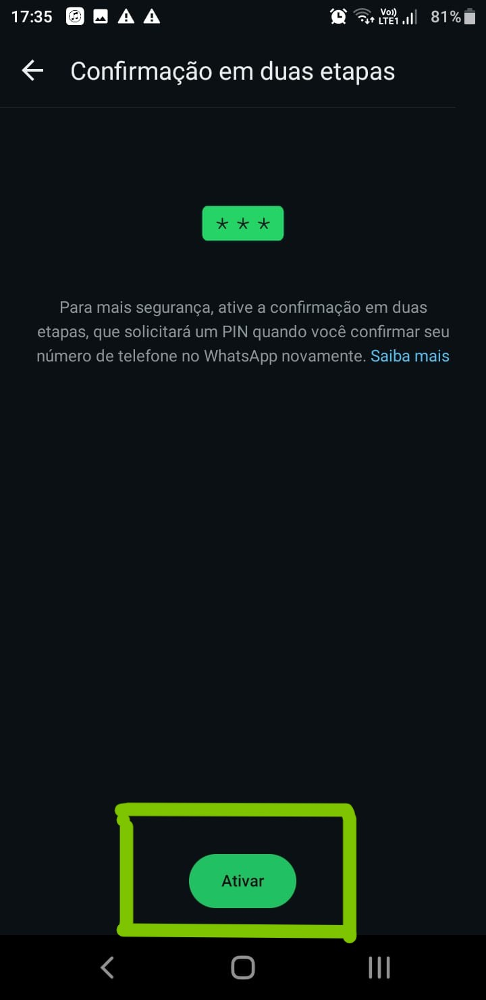Após configurar o código de acesso de seis dígitos,
você será solicitado a inseri-lo novamente para confirmação.
WhatsApp solicitará um endereço de email opcional.
Esse email pode ser usado para redefinir seu código de acesso caso você o esqueça.
Você pode adicionar um email ou pular essa etapa,
mas é altamente recomendado para maior segurança.
Após a confirmação do código de acesso e a adição do email (se aplicável),
a verificação em duas etapas estará ativada.
iOS: Acesse a App Store, procure por "Bitwarden" e baixe o aplicativo.
Android: Acesse a Google Play Store, procure por "Bitwarden" e baixe o aplicativo.
Abra o aplicativo e toque em "Criar Conta". Insira seu e-mail e crie uma senha mestre forte. Confirme seu e-mail através de um link enviado por e-mail.
Adicionar Manualmente: Toque em Adicionar Item e insira suas senhas manualmente. Importar Senhas: Vá para Configurações > Ferramentas > Importar Dados para importar senhas de outros gerenciadores de senhas ou navegadores.
Habilitar Preenchimento Automático: Vá para Configurações do seu dispositivo,selecione Preenchimento Automático e escolha o Bitwarden como seu gerenciador de preenchimento automático. Testar: Ao acessar um site ou aplicativo, o Bitwarden deve oferecer a opção de preencher automaticamente suas credenciais.
Adicionar Autenticação de Dois Fatores: No Bitwarden, vá para Configurações > Ferramentas > Autenticação de Dois Fatores. Escolha um Método: Você pode usar aplicativos como Google Authenticator ou Authy. Adicionar Conta: Escaneie o código QR fornecido pela sua conta e adicione a autenticação de dois fatores ao Bitwarden.
Adicionar Nota Segura: Toque em Adicionar Item e selecione Nota Segura.Insira informações sensíveis como números de segurança e senhas importantes.
Acesso de Emergência: Vá para Configurações > Segurança > Acesso de Emergência econfigure contatos de confiança que possam acessar suas senhas em caso de emergência.
Sincronização: O Bitwarden sincroniza automaticamente suas senhas entre dispositivos, garantindo que você tenha acesso às suas senhas em qualquer lugar.
Atualizações: Mantenha o aplicativo sempre atualizado para garantir que você tenha as últimas melhorias de segurança.
Clicar na seta para baixo no canto superior direito do Facebook e ir em Configurações.
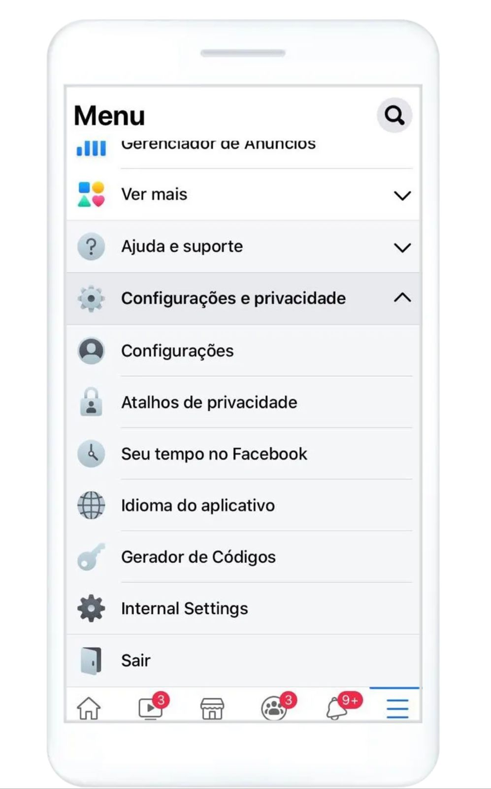Segurança e login, para acessar as Configurações de segurança e login da sua conta.
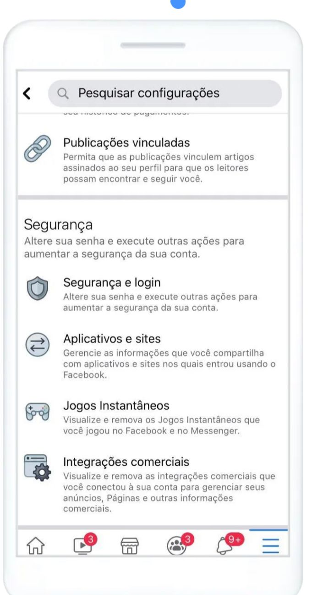Rolar a tela para baixo até Usar autenticação de dois fatores e clicar em Editar.
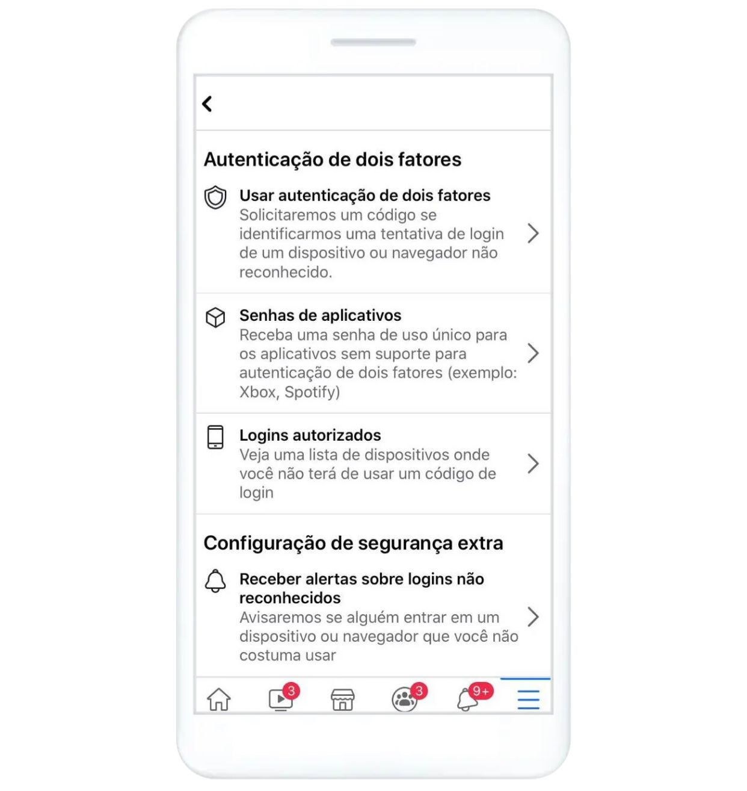Clicar em Ativar depois de ter selecionado e configurado um método de autenticação.
- Códigos de SMS no seu celular
- Códigos de login de um aplicativo de autenticação de terceiros.
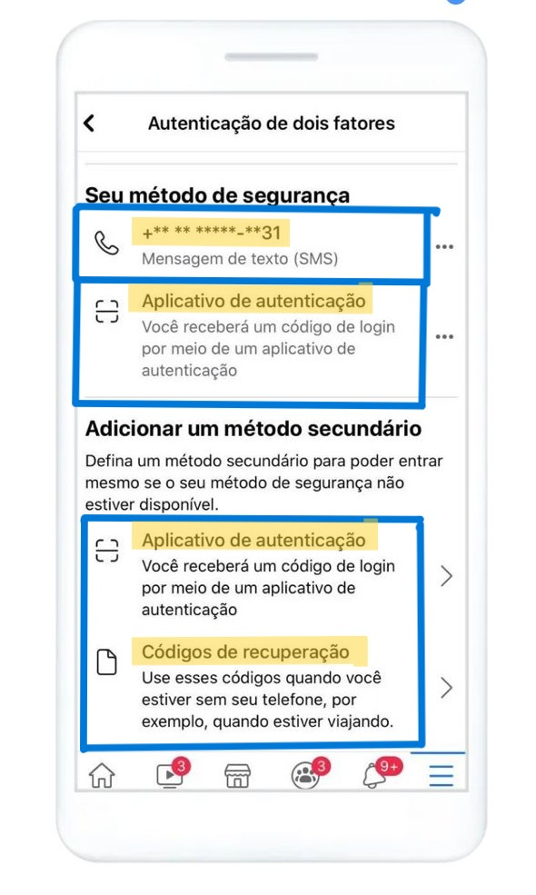Vá para o seu perfil e toque no menu de três linhas no canto superior direito
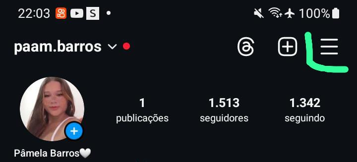Toque em configuração e atividades. Em seguida, toque em "Central de Contas".
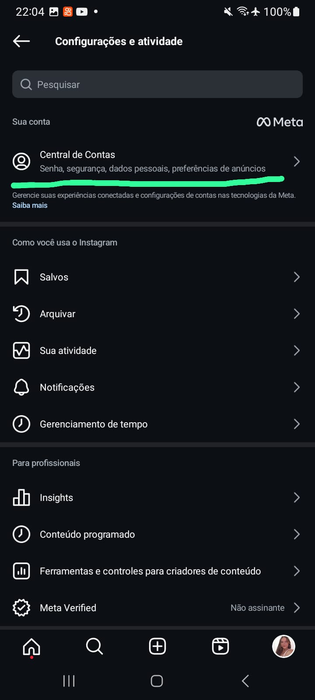Dentro da Central de Contas vá para Senha e segurança.
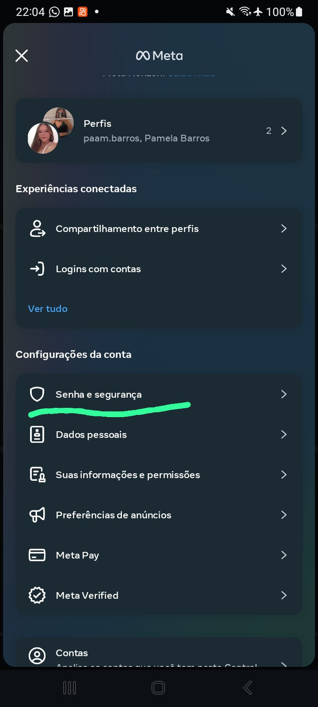Toque em Autenticação de Dois Fatores.
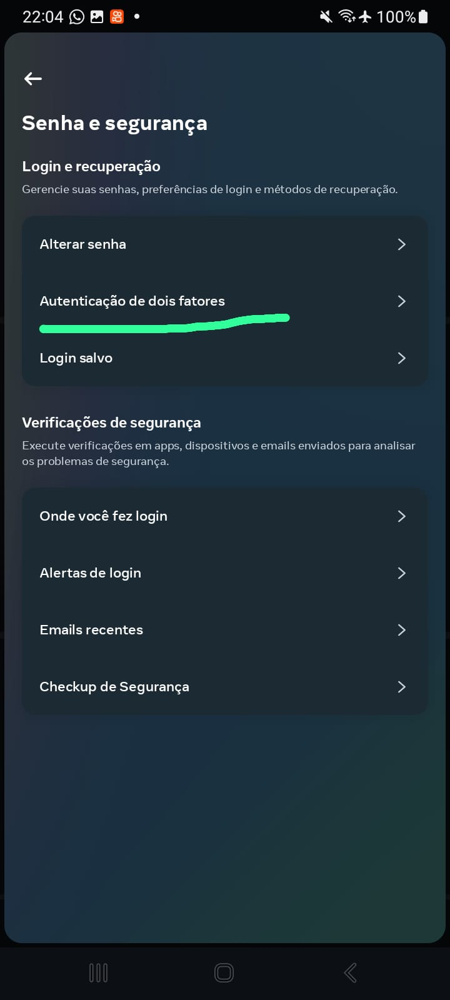Você verá opções para ativar a autenticação de dois fatores por SMS e Aplicativo de Autenticação. Escolha "SMS".
Digite o número de telefone associado à sua conta do Instagram e toque em "Avançar".
Você receberá um código por SMS. Digite esse código no Instagram paraconfirmar a ativação da autenticação de dois fatores.
O Instagram fornecerá alguns códigos de reserva. Guarde esses códigos em um lugar seguro.Eles podem ser usados para acessar sua conta caso você perca acesso ao seu telefone.
1.Não clique em links suspeitos ou des conhecidos 2.Não baixe arquivos de fontes desconhecidas 3.Verifique a autenticidade de mensagens e comentários